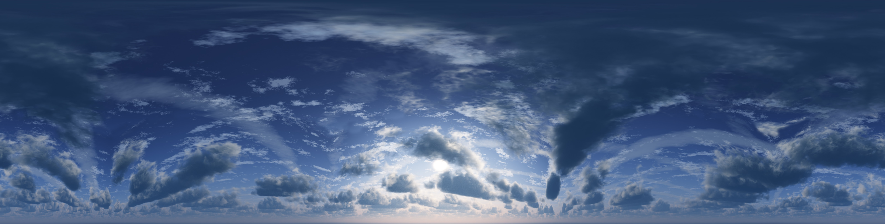

<html>
<head>
    <meta http-equiv="X-UA-Compatible" content="IE=edge">
    <meta http-equiv="content-type" content="text/html; charset=utf-8">
    <meta name="viewport"
          content="width=device-width,initial-scale=1,shrink-to-fit=no,user-scalable=no,maximum-scale=1">
    <title>Obstacle Course</title>
    <script src="aframe/aframe.js"></script>
    <script src="primitives/wall.js"></script>
    <script src="aframe/aframe-extras.min.js"></script>
    <script src="aframe/aframe-sun-sky.min.js"></script>
    <script src="keys.js"></script>
</head>
<body>
<a-scene>
    <a-assets>
        <a-mixin id="green" material="color: #39BB82"></a-mixin>
        <a-mixin id="ocean" material="color: #A3CCFF"></a-mixin>
        <a-mixin id="test" material="color: #f0f"></a-mixin>
        <a-mixin id="grey" material="color: #eee"></a-mixin>
        <a-mixin id="platform" geometry="width: 4; height: 0.75; depth: 4" velocity="0 0 0" static-body></a-mixin>

        <!---->
    </a-assets>
    <!-- Player -->
    <a-entity id="player" camera
              universal-controls
              kinematic-body
              jump-ability
              minHeight="-5"
              position="35 2 -35"></a-entity>

    <!-- Ground -->
    <!--<a-grid static-body position="0 0 0"></a-grid>-->
    <a-ocean mixin="ocean" width="100" depth="100" density="60" speed="2" position="0 -0.15 0"></a-ocean>

    <!--Hollow square-->
    <a-entity position="10 5 -20">
        <a-box height="0.25" width="10" depth="10" position="0 -4.875 0" mixin="green" static-body></a-box>
        <a-box height="0.25" width="10" depth="10" position="0 4.875 0" mixin="green" static-body></a-box>
        <a-box height="10" width="0.25" depth="10" position="4.875 0 0" mixin="green" static-body></a-box>
        <a-box height="10" width="0.25" depth="10" position="-4.875 0 0" mixin="green" static-body></a-box>
        <!--left right sphere-->
        <a-sphere position="0 0 0" radius="1" mixin="grey" static-body>
            <a-animation
                    attribute="position"
                    callback="left"
                    dur="750"
                    from="0 0 0" to="-3.75 0 0">
            </a-animation>
            <a-animation
                    attribute="position"
                    begin="left"
                    callback="right"
                    dur="1500"
                    from="-3.75 0 0" to="3.75 0 0">
            </a-animation>
            <a-animation
                    attribute="position"
                    begin="right"
                    callback="left"
                    dur="1500"
                    from="3.75 0 0" to="-3.75 0 0">
            </a-animation>
        </a-sphere>
        <a-sphere position="0 3.75 0" radius="1" mixin="grey" static-body>
            <a-animation
                    attribute="position"
                    callback="down"
                    dur="1500"
                    from="0 3.75 0" to="0 -3.75 0">
            </a-animation>
            <a-animation
                    attribute="position"
                    begin="up"
                    callback="down"
                    dur="1500"
                    from="0 3.75 0" to="0 -3.75 0">
            </a-animation>
            <a-animation
                    attribute="position"
                    begin="down"
                    callback="up"
                    dur="1500"
                    from="0 -3.75 0" to="0 3.75 0">
            </a-animation>
        </a-sphere>
    </a-entity>

    <a-entity position="0 2 0">
        <!-- Tower -->
        <a-box id="tower"
               mixin="green"
               width="10" height="8" depth="6"
               position="0 1 -15"
               static-body></a-box>

        <!-- Ramp -->
        <!--
        Ramp ends at
            z (depth) = -15+6/2 = -12
            y (height) = 1 + 8/2 = 5
            find (y,z) such that
                y+d/2*cos(35)+h/2*sin(35) = 5
                z-d/2*cos(35)+h/2*sin(35) = -12
           d and h are from ramp
        -->
        <a-box id="ramp"
               mixin="green"
               width="1" height="5" depth="15"
               position="0 -1.349703383 -7.290300759"
               rotation="35 0 0"
               static-body></a-box>
        <a-box mixin="green platform"
               position="1 -2 -2"
        ></a-box>
    </a-entity>

    <!-- Starting Block -->
    <a-box mixin="green"
           width="1" height="5" depth="11.4"
           position="15 0 -35"
           rotation="20 90 0"
           static-body></a-box>
    <a-box mixin="green"
           width="1" height="5" depth="11.4"
           position="10 0 -30"
           rotation="20 0 0"
           static-body></a-box>
    <a-box mixin="green"
           width="1" height="8.6" depth="1"
           position="10 0 -35"
           static-body></a-box>
    <a-box id="platform-start"
           mixin="green platform"
           position="35 0 -35"
           toggle-velocity="axis: z; min: -35; max: -28.5;"
    ></a-box>
    <a-box id="platform-start-second"
           mixin="green platform"
           position="30 0 -35"
           toggle-velocity="axis: x; min: 23.5; max: 30;"
    ></a-box>

    <!-- Upper platforms -->
    <a-entity>
        <!--long platform near hollow box-->
        <a-box
                mixin="green"
                width="4" height="0.25" depth="10"
                position="7 0.125 -10"
                static-body></a-box>
        <a-box
                mixin="green platform"
                position="-7 0.125 -15"
                toggle-velocity="axis: y; min: 0.125; max: 6;"
        ></a-box>
        <a-box
                mixin="green platform"
                position="-7 8 -15"
                toggle-velocity="axis: y; min: 8; max: 13.875;"
        ></a-box>
        <a-box
                mixin="green platform"
                position="-7 13.875 -3.125"
                toggle-velocity="axis: z; min: -9; max: -3.125;"
        ></a-box>
        <!--<a-box mixin="green"-->
        <!--width="2" height="1" depth="2"-->
        <!--position="-6 14.375 -2.125"-->
        <!--dynamic-body></a-box>-->
        <!--last platform-->
        <a-box
                mixin="ocean platform"
                position="-7 12.875 2.5"
                toggle-velocity="axis: x; min: -7; max: -1.125;"
        ></a-box>
    </a-entity>

    <!-- Blocks
    <a-box mixin="green"
           width="1" height="1" depth="1"
           position="15 2 0.6"
           dynamic-body></a-box>
    <a-box mixin="green"
           width="1" height="1" depth="1"
           position="15 2 -0.6"
           dynamic-body></a-box>
    <a-box mixin="green"
           width="1" height="1" depth="1"
           position="15 4 0"
           dynamic-body></a-box>
    <a-cylinder mixin="green"
                rotation="90 0 0"
                position="15 2 4"
                dynamic-body></a-cylinder>
    <a-sphere mixin="green"
              position="15 2 -4"
              dynamic-body></a-sphere>
             -->

    <!--<a-sky src="#sky" color="#6EBAA7"></a-sky>-->
    <a-sun-sky material="sunPosition: 0 30 0"></a-sun-sky>
    <!-- Lighting -->
    <a-light type="ambient" color="#bbb"></a-light>
    <a-light color="#ccc" position="0 30 0" distance="100" intensity="0.6" type="point"></a-light>
    <!--<a-light color="#ccc" position="3 15 -10" distance="50" intensity="0.4" type="point"></a-light>-->
</a-scene>
</body>

</html>